Diseño y ejecución de proyectos viales
Obras de arte y drenaje: alcantarillas, muros, cunetas, veredas, sardineles, pontones, subdrenes, defensas ribereñas y gaviones.
Inversiones & Proyectos San Rafael S.A.C. diseña, construye y da mantenimiento a carreteras, estructuras y puentes en todo el Perú, con los más altos estándares de seguridad y calidad.
Inversiones & Proyectos San Rafael S.A.C. inició operaciones el 15 de abril de 2013. Nuestra solidez se respalda en un equipo humano con amplia experiencia en la ejecución de grandes obras a lo largo del país y una alta especialización académica y profesional, lo que nos posiciona como una empresa con gran capacidad de respuesta ante los retos de la gestión operacional, estratégica y de soporte, alineados con los estándares más recientes en gerencia de proyectos. Hemos ganado un lugar en el competitivo mercado local, respondiendo a la creciente demanda de la industria de la construcción en obras de mediana y gran envergadura.
Nuestro objetivo para los próximos años es consolidar nuestra presencia a nivel nacional, siendo partícipes activos del desarrollo del Perú, mediante alianzas estratégicas con empresas nacionales a lo largo de todo el territorio peruano, en línea con el proceso de regionalización que impulsa el Estado.
Cubrimos todo el ciclo de vida de una obra civil: diseño, ejecución, mantenimiento y rehabilitación.
Obras de arte y drenaje: alcantarillas, muros, cunetas, veredas, sardineles, pontones, subdrenes, defensas ribereñas y gaviones.
Obras estructurales en concreto armado y acero, ejecutadas bajo estrictos controles de calidad.
Reparación de daños superficiales en concreto armado, mantenimiento y rectificación de estructuras metálicas.
Construcción, rehabilitación y reparación de bienes inmuebles residenciales, educativos e industriales.
Puentes peatonales, muros de contención y veredas, con tratamiento de fisuras y microfisuras.
Servicio de pintado siguiendo todas las fases del proceso técnico para estructuras de concreto y acero.
Una muestra de las obras que respaldan nuestra experiencia técnica en todo el país.
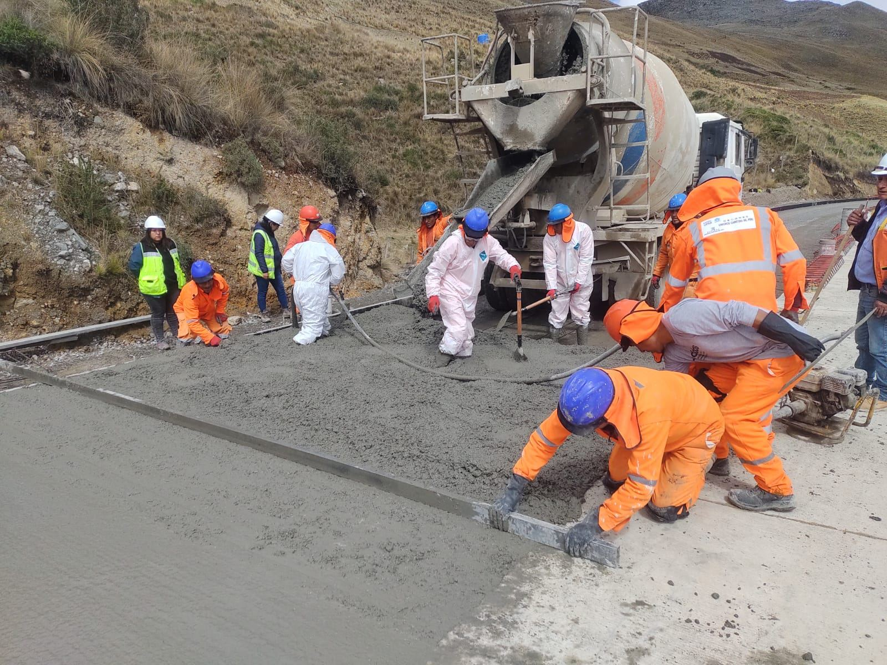
Tramo II: desvío Cerro de Pasco – desvío Chacayán. Obras de arte y pavimento de concreto hidráulico. Desde noviembre de 2021.
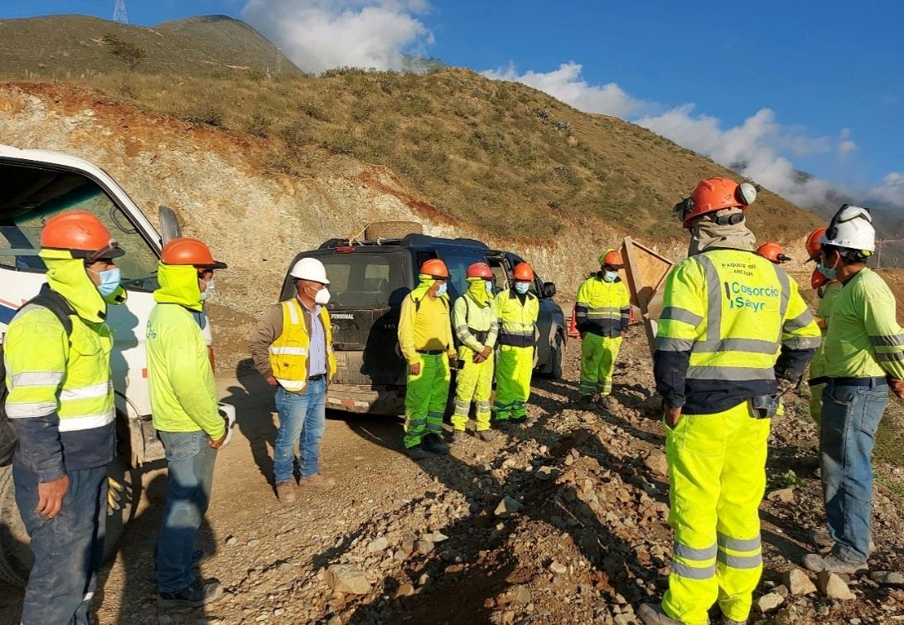
Servicio de mano de obra para obras de arte en la infraestructura vial. Noviembre 2020 – abril 2021.
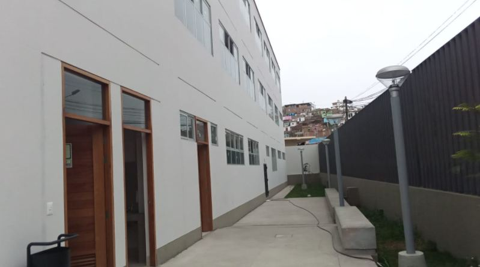
Mejoramiento del servicio educativo del nivel primaria en el distrito de Pucusana, Lima.
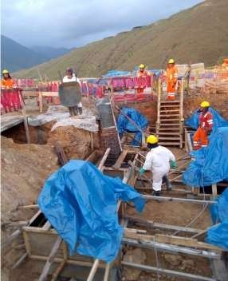
Ejecución de losas modulares para infraestructura industrial minera. Marzo – mayo 2019.
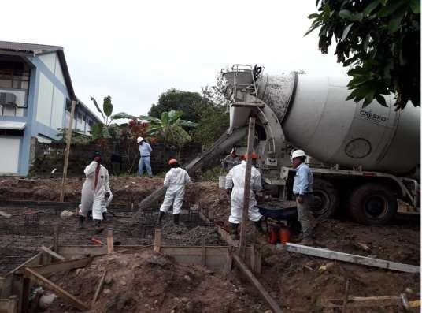
Construcción de losas modulares en infraestructura educativa. Enero – febrero 2019.
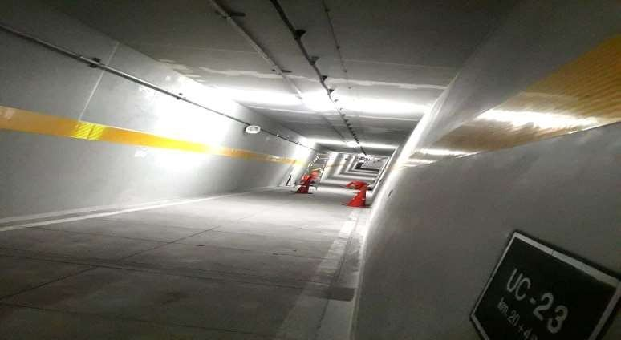
Reparación de fisuras y humedad en muros del túnel Gambeta, Callao. Octubre – noviembre 2018.
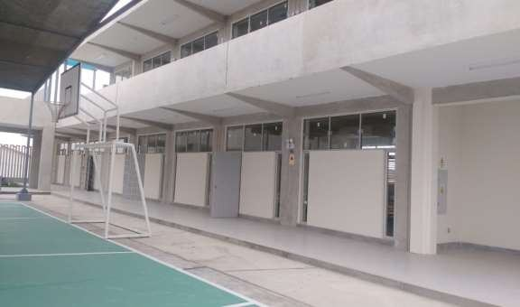
Sustitución y construcción de infraestructura y equipamiento educativo en Subtanjalla, Ica. Diciembre 2017 – julio 2018.
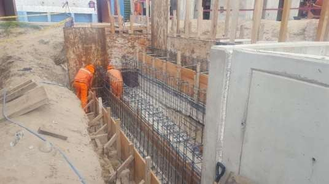
Instalación de estructuras tipo túnel liner y ejecución de cunetas en carretera. Agosto 2017.
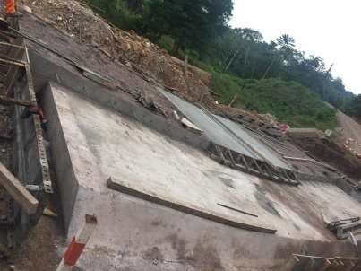
Construcción de badenes y alcantarillas TMC. Junio – noviembre 2019.
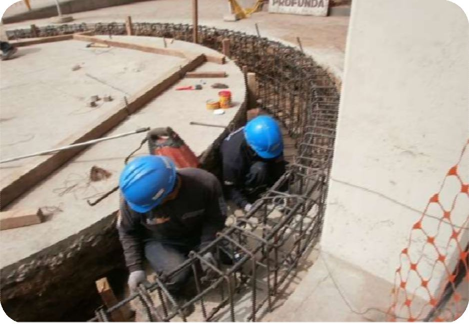
Instalación y montaje de estructuras metálicas: tanque propagador y silos de molienda. Julio – diciembre 2014.
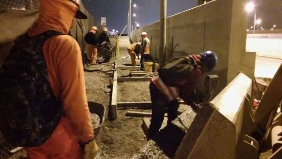
Construcción de puentes peatonales, muros de contención y veredas. 2015 – 2016.
Un equipo multidisciplinario que respalda cada proyecto con experiencia técnica y de campo.
Especialista en diseño de proyectos estructurales y civiles, obras de arte y procesamiento de datos topográficos.
Gestión administrativa de la empresa: documentación, cumplimiento de requerimientos y coordinación general.
Supervisor de Seguridad y Salud en el Trabajo, con doce años de experiencia en obras de construcción civil.
Apoyo interno y externo en el campo de la ingeniería para el logro de los objetivos de cada obra.
Empresas y consorcios que han confiado en nuestra experiencia técnica.
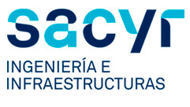
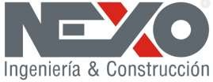
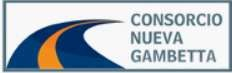
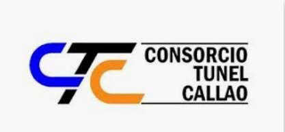
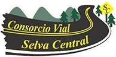
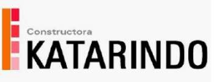
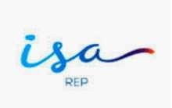
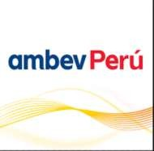
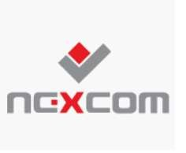
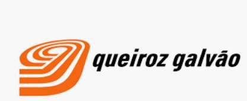
Nuestros sistemas de gestión están certificados por LOT Internacional, bajo acreditación de INACAL. Haz clic en cada certificado para verlo completo.
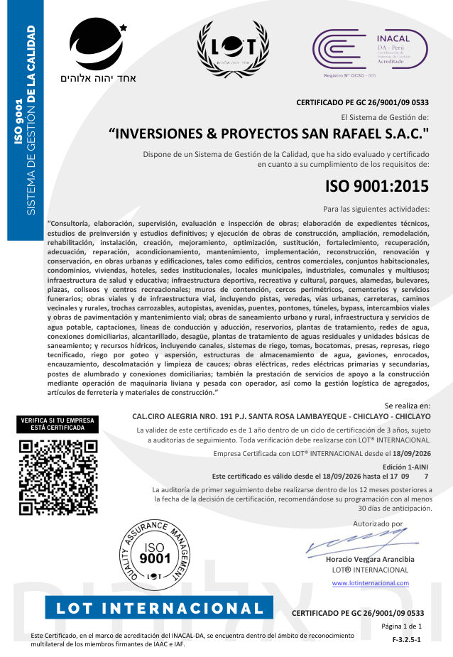
Certificado PE GC 26/9001/09 0533
Vigente del 18/09/2026 al 17/09/2027
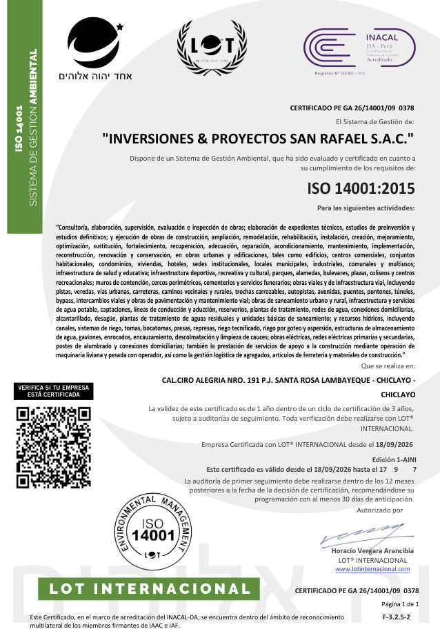
Certificado PE GA 26/14001/09 0378
Vigente del 18/09/2026 al 17/09/2027
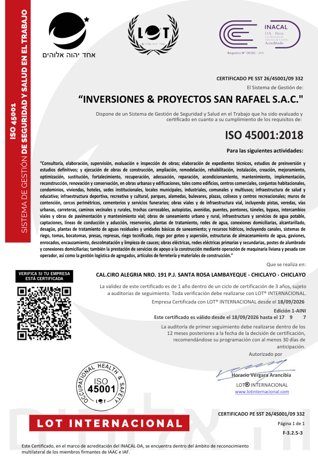
Certificado PE SST 26/45001/09 332
Vigente del 18/09/2026 al 17/09/2027
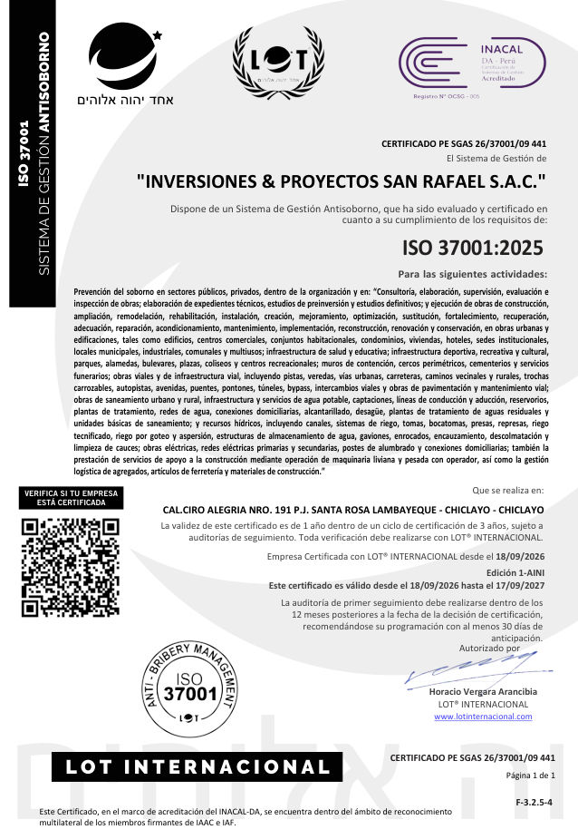
Certificado PE SGAS 26/37001/09 441
Vigente del 18/09/2026 al 17/09/2027
Escríbenos o llámanos directamente, con gusto atenderemos tu proyecto.
Calle Ciro Alegría N.º 191, Sta. Rosa
Chiclayo – Lambayeque, Perú
Mz. J Lt. 4, Asociación Bello Horizonte
Puente Piedra – Lima, Perú